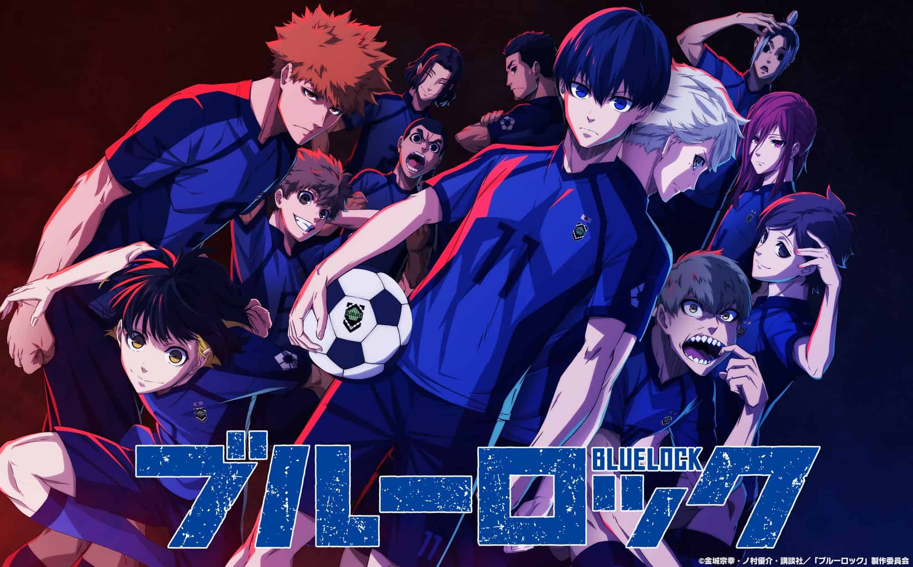

A série é centrada em um programa de treinamento de futebol de elite chamado "Blue Lock", desenvolvido para encontrar e cultivar o próximo grande atacante para a seleção nacional do Japão.
A história começa quando o Japão é eliminado da Copa do Mundo devido à falta de um atacante verdadeiramente excepcional.
Para superar essa lacuna, o Blue Lock reúne um grupo de atacantes talentosos e os submete a intensos treinamentos competitivos e desafios. A trama se desenrola, explorando temas como rivalidade, superação pessoal e a pressão de se tornar o melhor.
Ao longo da história, os personagens enfrentam obstáculos físicos e psicológicos, enquanto tentam se destacar e garantir um lugar na seleção nacional. "Blue Lock" oferece uma abordagem única para explorar a competição no mundo do futebol, questionando conceitos tradicionais de trabalho em equipe e destacando a importância do individualismo no esporte.O protagonista de "Blue Lock" é Yoichi Isagi. Ele é apresentado como um jogador de futebol talentoso que atua como atacante. No início da história, após a eliminação do Japão na Copa do Mundo, Isagi é selecionado para participar do programa Blue Lock junto com outros atacantes promissores.
Uma frase que eu gosto muito e que resume bem o personagem é
é com essa mentalidade que ele consegue evoluir e se tornar um dos melhores jogadores até então
fora essas artes que os fans criam